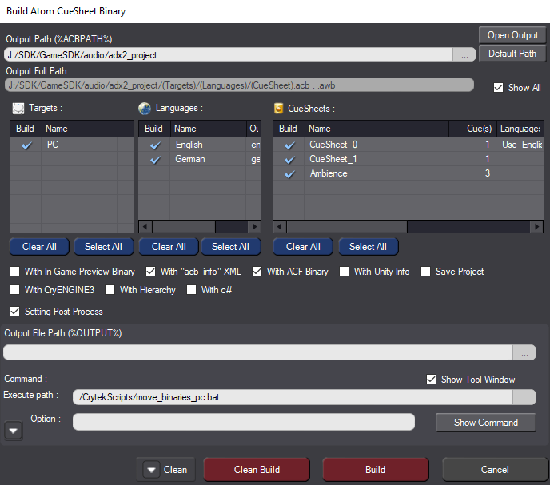
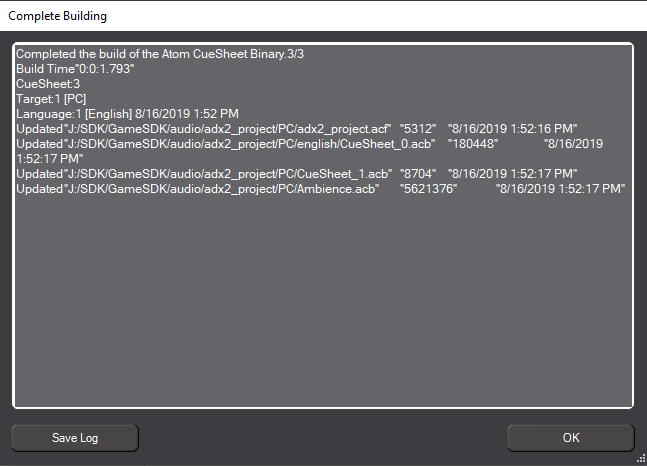

Обзор
Ниже объясняется, как настроить локализованные двоичные файлы CueSheet в ADX2 и CRYENGINE.
CRYENGINE загружает локализованные двоичные файлы CueSheet из папки локализации вашего проекта (где, например, английские двоичные файлы CueSheet могут храниться в папке локализация/английский/аудио/adx2). Это позволяет полностью отделить несколько языков аудио друг от друга, что упрощает их замену во время выполнения, а также распространение контента для конкретного региона.
Информация о локализованных звуковых банках
ADX2 собирает локализованные двоичные файлы CueSheet в подпапку основного места хранения двоичных файлов CueSheet (т. е. <ProjectFolder>/audio/adx2/assets).
Поскольку эту подпапку невозможно указать вручную в AtomCraft, необходимо переместить двоичные файлы после их создания. CRYENGINE SDK содержит сценарии постобработки, которые можно использовать для автоматизации процесса перемещения двоичных файлов CueSheet в нужную папку; эти сценарии прикреплены ниже.
Вышеуказанные сценарии работают только в том случае, если проект ADX2 хранится в папке аудио/adx2_project папка вашего проекта CRYENGINE. В противном случае сценарии необходимо отредактировать, чтобы они соответствовали истинному месту хранения ADX2.
В настоящее время эти скрипты поддерживают только английский и немецкий языки, но вы также можете легко добавить в список другие языки. languages.txt файл, расположенный в папке /audio/adx2_project/crytekscripts папка вашего проекта CRYENGINE.
Настройка локализованных звуковых банков в ADX2
Выполнение сценариев постобработки в проекте AtomCraft
Скопируйте сценарии постобработки CRYENGINE SDK в файл /audio/adx2_project/crytekscripts папку вашего проекта AtomCraft и откройте окно сборки двоичного файла Atom CueSheet в AtomCraft.
- Активируйте Настройка постпроцесса вариант.
- Установите Путь выполнения поле для ./crytekscripts/move_binaries_pc.bat.
- Нажмите кнопку Путь по умолчанию кнопка рядом с Выходной путь поле, чтобы убедиться, что для него установлен путь по умолчанию; оставить Путь к выходному файлу и Вариант поля пустые. Вы можете использовать следующее изображение для справки.

Двоичное окно сборки Atom CueSheet
Вы также можете включить Показать окно инструмента возможность получать обратную связь при выполнении пакетного файла, содержащего сценарии постобработки.
Нажмите кнопку Построить кнопку для создания двоичных файлов CueSheet. Откроется окно «Завершение сборки», в котором отображается список успешно обновленных двоичных файлов; пакетный файл запускается после нажатия кнопки OK кнопку в этом окне.

Полное здание
Строки кода для PC являются частью пакетного файла, прикрепленного выше. Другие платформы можно легко добавить, скопировав скрипт и откорректировав его содержимое.
Этот пакетный файл не только перемещает локализованные двоичные файлы CueSheet в правильный путь к папке, но также перемещает нелокализованные двоичные файлы в их предполагаемое положение в проекте CRYENGINE.
Важно, чтобы языки локализации и имена их справочных/выходных папок, определенные в проекте AtomCraft, совпадали с именами в файле languages.txt файл, расположенный в папке /audio/adx2_project/crytekscripts папка вашего проекта CRYENGINE.